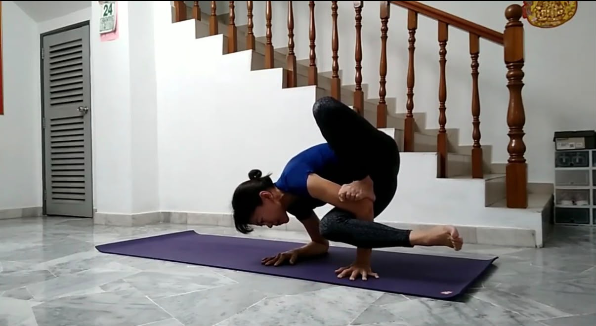
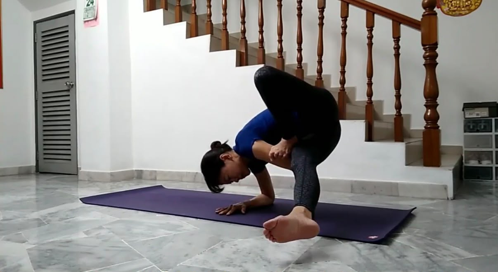
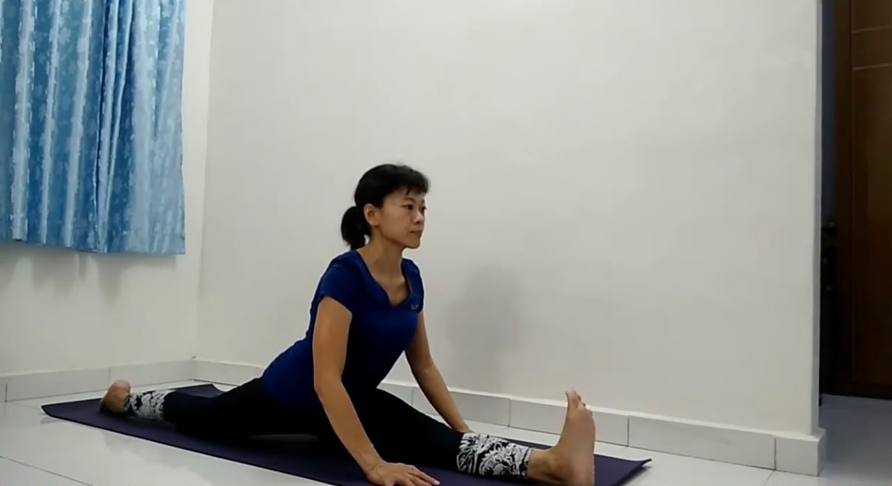
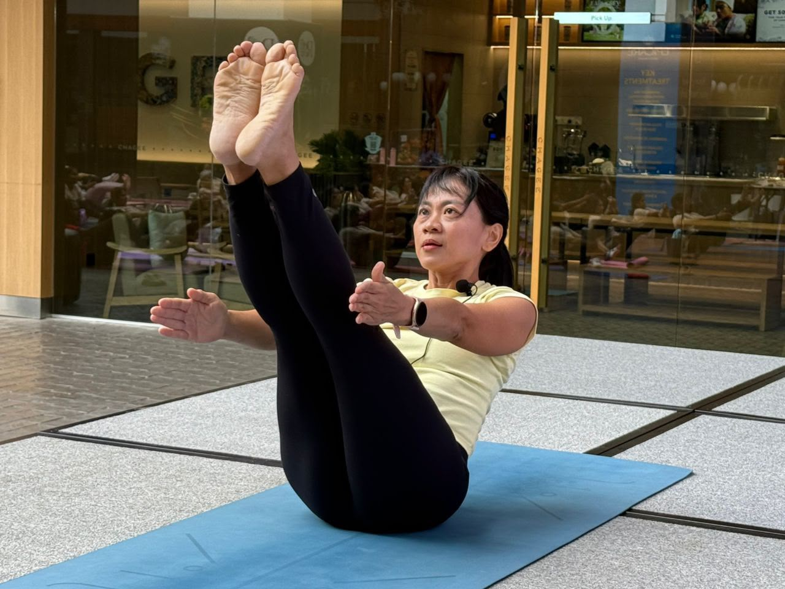
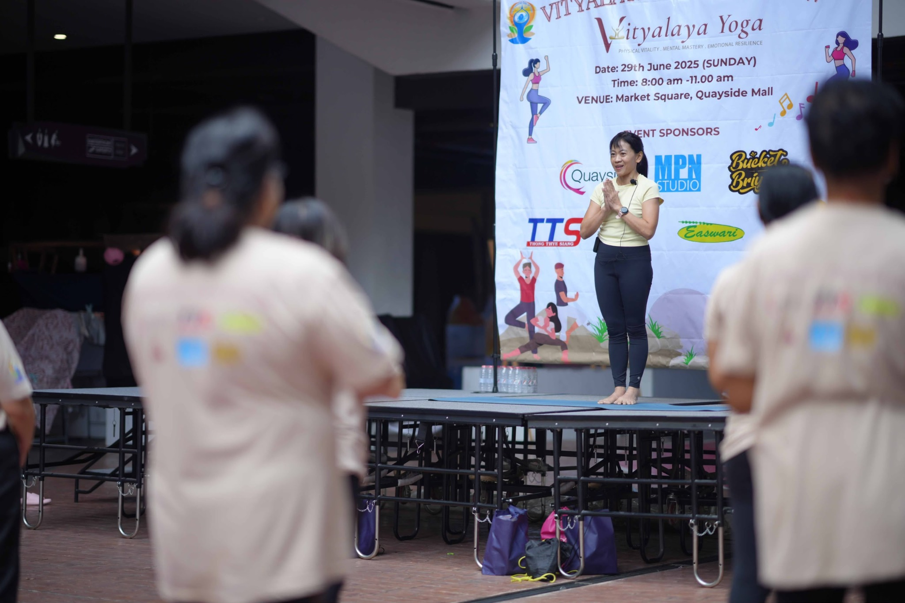
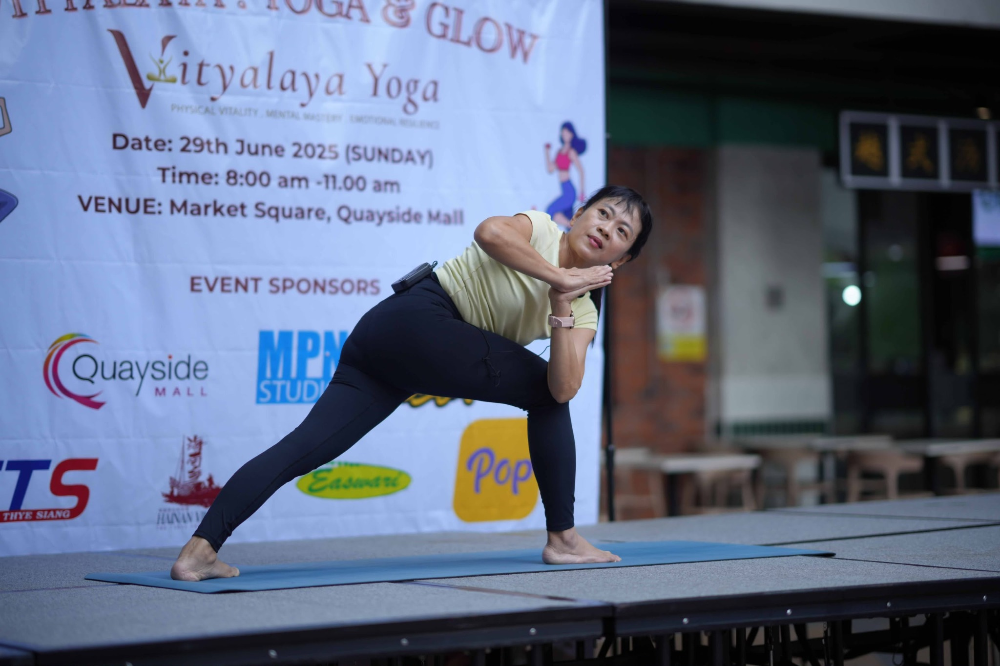

Practicing since 2007 and teaching since 2017, Wirni brings experience, warmth and a love of learning into every class.
After many years of learning and teaching through established yoga studios, Wirni found the courage to create something of her own: a smaller, more personal space to practice together.
Humble and down to earth, she welcomes students to learn at their own pace, stay curious and enjoy the practice.
Her teaching includes Ashtanga Yoga, Hatha Yoga, Flow Yoga, Precision Alignment, Body Tone, handstands, backbends, arm balances and inversions.
“At 54, her passion for yoga is still young, curious and thriving.”
Scroll through moments from Wirni’s personal practice and teaching journey.






A simplified portfolio of Wirni’s yoga education and teacher training.